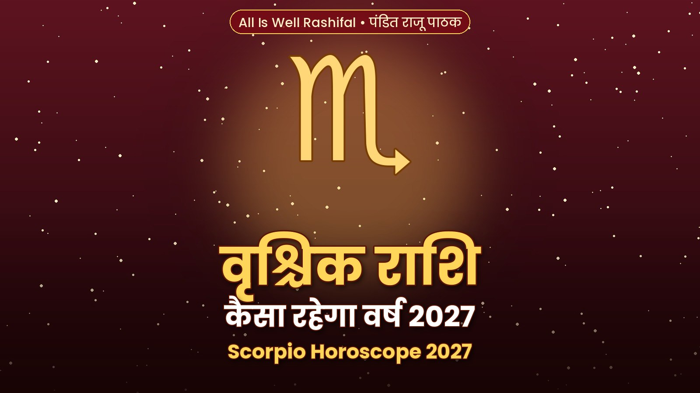

वृश्चिक राशिफल 2027: कैसा रहेगा वृश्चिक राशि के लिए साल 2027 – भाग्य का साथ, करियर, धन लाभ, विवाह और महीने-दर-महीने भविष्यफल | Vrishchik Rashifal 2027
वृश्चिक राशि 2027 कैसा रहेगा? 25 जनवरी से 25 जून तक उच्च के गुरु भाग्य भाव में किस्मत चमकाएँगे, राहु तीसरे भाव में पूरे साल हिम्मत और कमाई बढ़ाएगा, और 3 जून से शनि छठे भाव में विरोधियों पर जीत दिलाएँगे। करियर, धन, प्रेम, विवाह, सेहत और हर महीने का हाल, उपाय सहित।
पूरा लेख पढ़ें →